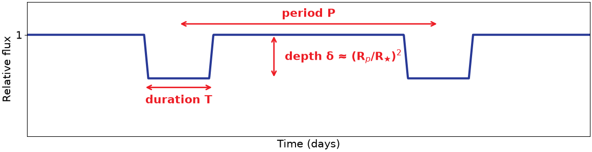
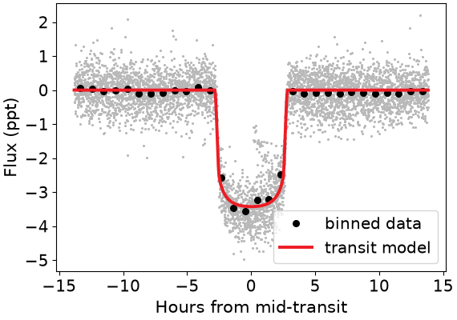
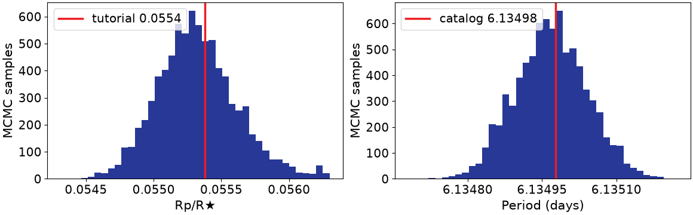
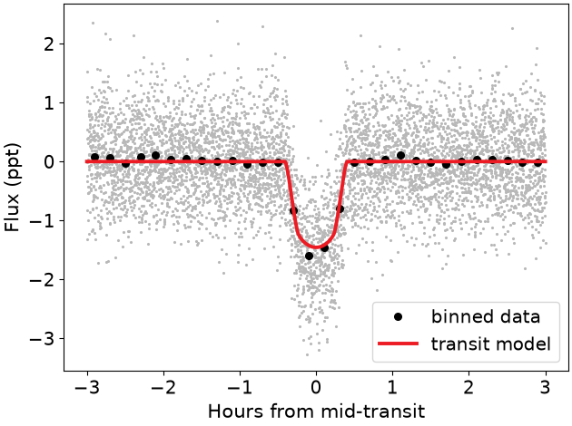
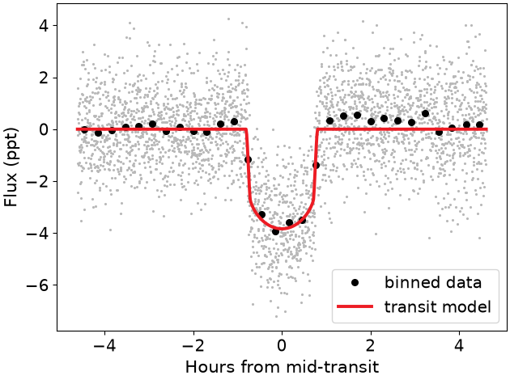
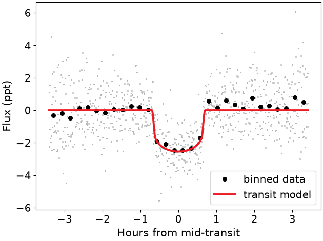
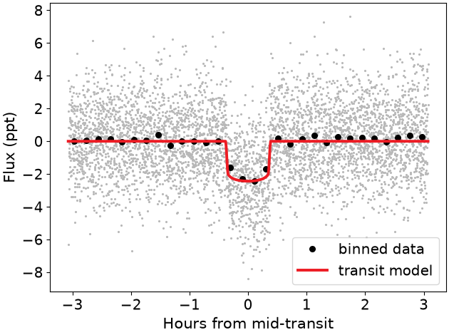
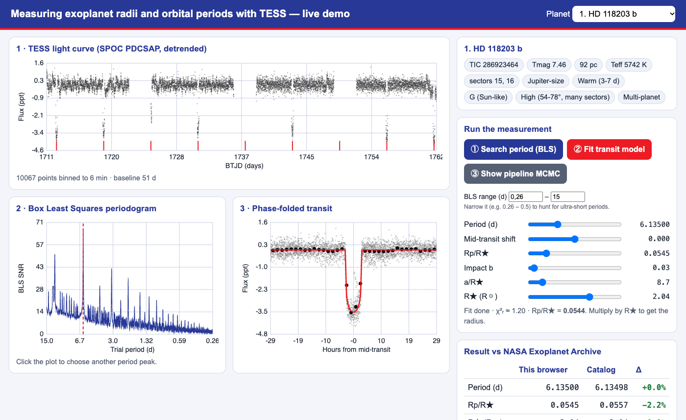
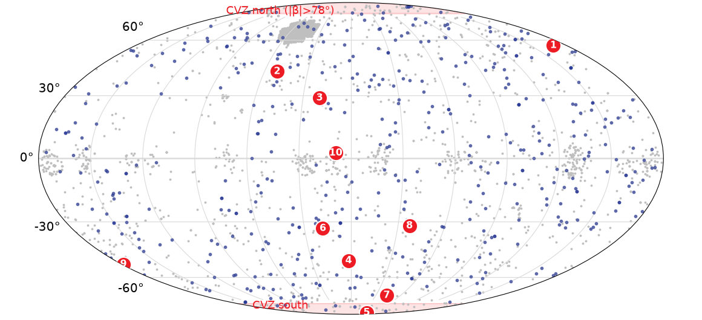
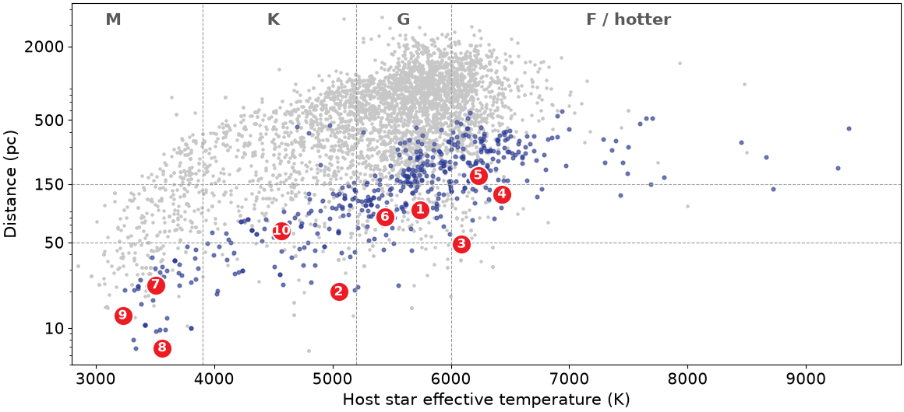

Measuring exoplanet radii and orbital periods with TESS
Mười hành tinh, một pipeline: từ đường cong ánh sáng công khai đến kích thước hành tinh, chia nhóm theo kích thước, quỹ đạo, sao chủ, khoảng cách và vị trí trên bầu trời
Đề tài: Space Observation Project 1, Nhóm 2
Giảng viên: TS. Nguyễn Thị Phương
USTH, Thạc sĩ năm 2 ngành Không gian, 25 tháng 11 năm 2026
1 Giới thiệu. Cái gì? Một câu hỏi, ba phép kiểm
Chu kỳ
Cả mười chu kỳ khớp với NASA Exoplanet Archive trong 0.03 % hoặc tốt hơn.
Bán kính
Tám trong mười bán kính khớp trong 4 %; chênh lớn nhất là 7.3 % (K2-141 b). Mọi chênh lệch đều nằm trong 1.4σ.
Độ phủ
Mười hành tinh từ 1.1 đến 15.7 R⊕ và 0.28 đến 6.1 ngày, cộng hai phép thử sức chịu bị thất bại.
Chúng tôi tự đo; catalog chỉ là đáp án để đối chiếu. Bán kính cần bán kính sao, mà số này không đến từ đường cong ánh sáng.
1 Giới thiệu. Vì sao? Một transit cho một tỉ số, và công thức của môn học biến nó thành kích thước

2 Phương pháp. Ở đâu? Từ 4 826 hành tinh trong archive đến mười hành tinh
có TIC ID
đủ thông tin
P < 15 d
độ sâu > 500 ppm
S/N > 12
được chọn
S/N ước tính: độ sâu chia cho một mô hình nhiễu đơn giản trong một giờ, tỉ lệ theo Tmag và số transit mỗi sector.
Nguồn: NASA Exoplanet Archive, bảng pscomppars (TAP), các hành tinh transit có mã TIC; đường cong ánh sáng: TESS SPOC 2 phút PDCSAP từ MAST.
2 Phương pháp. Cái nào? Sáu trục quyết định các đại diện
| Trục | Các lớp |
|---|---|
| Kích thước | Cỡ Trái Đất < 1.25 · Siêu Trái Đất < 2 · Dưới Hải Vương < 4 · Hải Vương/Thổ < 8 · Cỡ Sao Mộc ≥ 8 R⊕ |
| Quỹ đạo | USP < 1 ngày · Nóng 1 đến 3 ngày · Ấm 3 đến 7 ngày · Mát 7 đến 15 ngày |
| Sao | M < 3900 K · K < 5200 K · G < 6000 K · F hoặc nóng hơn |
| Khoảng cách | Gần < 50 pc · Giữa 50 đến 150 pc · Xa > 150 pc |
| Bầu trời | CVZ |β| > 78° · Cao 54 đến 78° · Thấp < 54° (vĩ độ hoàng đạo) |
| Hệ | Một hay nhiều hành tinh; do TESS tìm ra hay trước TESS |
2 Phương pháp. Cái nào? Mười hành tinh phủ mọi lớp kích thước và quỹ đạo

2 Phương pháp. Cái nào? Mười đại diện và nhóm mà mỗi hành tinh phủ
| Hành tinh | Kích thước | Quỹ đạo | Sao | pc | Bầu trời | Hệ |
|---|---|---|---|---|---|---|
| 1 HD 118203 b | Cỡ Sao Mộc | Ấm | G | 92 | Cao | Nhiều hành tinh |
| 2 HD 189733 b | Cỡ Sao Mộc | Nóng | Sao lùn K | 20 | Thấp | Một hành tinh |
| 3 HD 209458 b | Cỡ Sao Mộc | Ấm | F/nóng hơn | 48 | Thấp | Một hành tinh |
| 4 WASP-18 b | Cỡ Sao Mộc | USP | F/nóng hơn | 123 | Thấp | Một hành tinh |
| 5 WASP-62 b | Cỡ Sao Mộc | Ấm | F/nóng hơn | 176 | CVZ | Một hành tinh |
| 6 LTT 9779 b | Hải Vương/Thổ | USP | G | 80 | Thấp | Một hành tinh |
| 7 TOI-270 c | Dưới Hải Vương | Ấm | Sao lùn M | 22 | Cao | Nhiều hành tinh |
| 8 LTT 1445 A b | Siêu Trái Đất | Ấm | Sao lùn M | 7 | Thấp | Nhiều hành tinh |
| 9 GJ 1132 b | Cỡ Trái Đất | Nóng | Sao lùn M | 13 | Thấp | Nhiều hành tinh |
| 10 K2-141 b | Siêu Trái Đất | USP | Sao lùn K | 62 | Thấp | Nhiều hành tinh |
2 Phương pháp. Thế nào? Công thức của bài hướng dẫn, dựng lại bằng batman và emcee
P, t0, độ sâu
batman + emcee
bán kính
Giống bài hướng dẫn
Khớp nhanh cho đường cong ánh sáng TESS: SPOC PDCSAP, bỏ NaN và điểm ngoại lai, BLS, che các transit, khớp mô hình có tối tâm.
Chúng tôi thay đổi
PyMC3 và exoplanet được thay bằng batman và emcee (cùng mô hình Mandel-Agol). Ba biến thể làm phẳng cho sai số hệ thống.
Bán kính
Đường cong ánh sáng cho Rp/R★; R★ lấy từ archive; sai số tổng cộng gồm MCMC, làm phẳng và R★.
Chế độ tìm: mù = BLS trên 0.26 đến 15 ngày; có hướng dẫn = trong ±3 % chu kỳ catalog, thời lượng tỉ lệ theo thời lượng catalog (phụ lục A10).
2 Phương pháp. Thế nào? BLS tìm chu kỳ, phép khớp mô hình tìm tỉ số bán kính


3 Kết quả. Chuẩn so sánh: HD 118203 b tái tạo bài hướng dẫn

Chênh lệch bán kính là hiệu ứng của bán kính sao: bán kính catalog suy ra R★ = 2.10 R☉, bảng archive ghi 2.04.
3 Kết quả. 1 HD 118203 b. Cùng hành tinh với bài hướng dẫn: Rp/R★ trong 0.2 %

| Đo được | Catalog | Δ | |
|---|---|---|---|
| Chu kỳ (ngày) | 6.13498 | 6.13498 | 0.0000% |
| Rp/R★ | 0.0553 | 0.0557 | -0.8% |
| Rp (R⊕) | 12.30 ± 0.35 | 12.78 | -3.8% |
7 transit, sector 15, 16
3 Kết quả. 2 HD 189733 b. Sao sáng nhất, 12 transit: Rp/R★ chính xác đến 0.4 %

| Đo được | Catalog | Δ | |
|---|---|---|---|
| Chu kỳ (ngày) | 2.21858 | 2.21858 | 0.0000% |
| Rp/R★ | 0.1541 | 0.1553 | -0.8% |
| Rp (R⊕) | 12.61 ± 0.18 | 12.67 | -0.5% |
12 transit, sector 41
3 Kết quả. 3 HD 209458 b. Hành tinh transit đầu tiên: bán kính trong 1.0 %

| Đo được | Catalog | Δ | |
|---|---|---|---|
| Chu kỳ (ngày) | 3.52473 | 3.52475 | -0.0005% |
| Rp/R★ | 0.1212 | 0.1209 | +0.3% |
| Rp (R⊕) | 15.74 ± 0.27 | 15.58 | +1.0% |
8 transit, sector 56
3 Kết quả. 4 WASP-18 b. Quỹ đạo 22.6 giờ, 97 transit: R★ giới hạn bán kính

| Đo được | Catalog | Δ | |
|---|---|---|---|
| Chu kỳ (ngày) | 0.94145 | 0.94145 | +0.0002% |
| Rp/R★ | 0.0986 | 0.1018 | -3.2% |
| Rp (R⊕) | 14.18 ± 0.66 | 13.90 | +2.0% |
97 transit, sector 103, 104, 105, 106
3 Kết quả. 5 WASP-62 b. Mục tiêu CVZ phía nam: 4 trên 38 sector, bán kính trong 0.1 %

| Đo được | Catalog | Δ | |
|---|---|---|---|
| Chu kỳ (ngày) | 4.41195 | 4.41195 | 0.0000% |
| Rp/R★ | 0.1104 | 0.1111 | -0.6% |
| Rp (R⊕) | 14.82 ± 0.97 | 14.80 | +0.1% |
22 transit, sector 1, 2, 3, 4
3 Kết quả. 6 LTT 9779 b. Sa mạc Hải Vương nóng: b = 0.91 làm sai số tăng lên 13 %

| Đo được | Catalog | Δ | |
|---|---|---|---|
| Chu kỳ (ngày) | 0.79205 | 0.79205 | +0.0002% |
| Rp/R★ | 0.0440 | 0.0455 | -3.4% |
| Rp (R⊕) | 4.55 ± 0.59 | 4.72 | -3.6% |
34 transit, sector 2
3 Kết quả. 7 TOI-270 c. Dưới Hải Vương của một sao lùn M: 2.38 R⊕ trong 2.3 %

| Đo được | Catalog | Δ | |
|---|---|---|---|
| Chu kỳ (ngày) | 5.66023 | 5.66051 | -0.0049% |
| Rp/R★ | 0.0575 | 0.0560 | +2.7% |
| Rp (R⊕) | 2.38 ± 0.07 | 2.33 | +2.3% |
11 transit, sector 3, 4, 5
3 Kết quả. 8 LTT 1445 A b. Hệ gần nhất, 4 transit: 1.39 ± 0.12 R⊕

| Đo được | Catalog | Δ | |
|---|---|---|---|
| Chu kỳ (ngày) | 5.35904 | 5.35876 | +0.0051% |
| Rp/R★ | 0.0470 | 0.0454 | +3.5% |
| Rp (R⊕) | 1.39 ± 0.12 | 1.34 | +3.6% |
4 transit, sector 4
3 Kết quả. 9 GJ 1132 b. Hành tinh cỡ Trái Đất từ một dip 2.2 ppt: 1.14 ± 0.05 R⊕

| Đo được | Catalog | Δ | |
|---|---|---|---|
| Chu kỳ (ngày) | 1.62891 | 1.62893 | -0.0012% |
| Rp/R★ | 0.0474 | 0.0494 | -4.2% |
| Rp (R⊕) | 1.14 ± 0.05 | 1.19 | -4.1% |
26 transit, sector 9, 10
3 Kết quả. 10 K2-141 b. Một dip 355 ppm mỗi 6.7 giờ: bán kính thấp 7 %

| Đo được | Catalog | Δ | |
|---|---|---|---|
| Chu kỳ (ngày) | 0.28041 | 0.28032 | +0.0292% |
| Rp/R★ | 0.0188 | 0.0209 | -9.7% |
| Rp (R⊕) | 1.40 ± 0.10 | 1.51 | -7.3% |
57 transit, sector 42
3 Kết quả. Bán kính lệch catalog tối đa 7.3 %, chu kỳ lệch 0.03 %


3 Kết quả. Tóm tắt mười phép đo
| Hành tinh | ΔP (ppm) | Rp đo được (R⊕) | Rp catalog | ΔRp | Pull |
|---|---|---|---|---|---|
| 1 HD 118203 b | 0 | 12.30 ± 0.35 | 12.78 | -3.8% | -1.4σ |
| 2 HD 189733 b | 0 | 12.61 ± 0.18 | 12.67 | -0.5% | -0.3σ |
| 3 HD 209458 b | -5 | 15.74 ± 0.27 | 15.58 | +1.0% | +0.6σ |
| 4 WASP-18 b | +2 | 14.18 ± 0.66 | 13.90 | +2.0% | +0.4σ |
| 5 WASP-62 b | 0 | 14.82 ± 0.97 | 14.80 | +0.1% | +0.0σ |
| 6 LTT 9779 b | +2 | 4.55 ± 0.59 | 4.72 | -3.6% | -0.3σ |
| 7 TOI-270 c | -49 | 2.38 ± 0.07 | 2.33 | +2.3% | +0.8σ |
| 8 LTT 1445 A b | +51 | 1.39 ± 0.12 | 1.34 | +3.6% | +0.4σ |
| 9 GJ 1132 b | -12 | 1.14 ± 0.05 | 1.19 | -4.1% | -1.1σ |
| 10 K2-141 b | +292 | 1.40 ± 0.10 | 1.51 | -7.3% | -1.1σ |
4 Thảo luận. Bán kính sao và làm phẳng quyết định sai số, không phải nhiễu photon
| Hành tinh | R p /R ★ MCMC % | Rp/R★ làm phẳng % | R★ % | R p tổng % |
|---|---|---|---|---|
| 1 HD 118203 b | 0.5 | 2.4 | 1.5 | 2.9 |
| 2 HD 189733 b | 0.4 | 0.0 | 1.3 | 1.4 |
| 3 HD 209458 b | 0.3 | 0.1 | 1.7 | 1.7 |
| 4 WASP-18 b | 0.2 | 0.0 | 4.6 | 4.6 |
| 5 WASP-62 b | 0.4 | 0.1 | 6.5 | 6.5 |
| 6 LTT 9779 b | 6.1 | 11.5 | 0.6 | 13.1 |
| 7 TOI-270 c | 1.6 | 0.8 | 2.1 | 2.8 |
| 8 LTT 1445 A b | 5.2 | 0.5 | 7.0 | 8.7 |
| 9 GJ 1132 b | 2.2 | 1.2 | 3.1 | 4.0 |
| 10 K2-141 b | 6.3 | 2.2 | 2.6 | 7.2 |
4 Thảo luận. Chỗ phương pháp thất bại: ba bài học
Tìm mù có thể bám vào nhiễu
K2-141 b: BLS mù cho 5.70 ngày thay vì 0.280 ngày. Bản demo trên trình duyệt trả về 2×P cho LTT 1445 A b. Thu hẹp khoảng tìm (5 đến 6 ngày, hoặc 0.26 đến 0.5 ngày) thì cả hai đều đúng.
Sao hoạt động làm hỏng bước làm phẳng
AU Mic b (vết đen, bùng nổ): Rp/R★ = 0.25 ± 0.11 so với 0.050. DS Tuc A b: sai số hệ thống ±0.12.
Ít transit giới hạn độ chính xác
AU Mic b chỉ có 3 transit trong một sector, kèm biến thiên thời điểm; LTT 1445 A b chỉ 4. Thêm sector sẽ giúp ích.
AU Mic b và DS Tuc A b được báo là thất bại và không nằm trong mười hành tinh.
4 Thảo luận. Demo trực tiếp: lặp lại phép đo ngay trên trình duyệt

Các bước
1 Chọn một hành tinh. 2 BLS tìm các chu kỳ. 3 Khớp transit. 4 So với NASA archive và với MCMC của chúng tôi.
Thử
K2-141 b: đặt khoảng BLS từ 0.26 đến 0.5 ngày. LTT 1445 A b: 5 đến 6 ngày.
Tệp: demo/index.html và notebooks/01_measure_one_planet.ipynb trong thư mục này.
5 Kết luận và hướng phát triển
Điều chúng tôi chỉ ra
Chu kỳ của mười hành tinh (0.28 đến 6.1 ngày) trong 0.03 % và bán kính (1.1 đến 15.7 R⊕) trong 4 % với tám trong mười, từ dữ liệu công khai và một pipeline.
Điều giới hạn nó
Bán kính sao (tới 7 %), làm phẳng (khoảng 1 %), số transit, và tìm mù ở chu kỳ ngắn hoặc S/N thấp.
Tiếp theo
Khớp mật độ sao và độ lệch tâm, tìm TTV, chồng thêm sector, làm phẳng bằng quá trình Gauss cho các sao hoạt động.
A1 Phụ lục. Thuật ngữ dùng trong bài nói
| Thuật ngữ | Ý nghĩa |
|---|---|
| TESS, sector | Vệ tinh khảo sát của NASA; nhìn chằm chằm một trường 24 nhân 96 độ trong khoảng 27 ngày (một sector) |
| SPOC, PDCSAP | Pipeline khoa học của TESS; thông lượng sau khi loại hệ thống sai số (cadence 2 phút) |
| TIC, Tmag | Mã trong TESS Input Catalog và cấp sao trong dải TESS của sao |
| BLS | Box Least Squares: tìm các dip dạng hộp tuần hoàn |
| Rp/R★, b | Tỉ số bán kính hành tinh trên sao; tham số va chạm (0 = transit đi qua tâm) |
| Tối tâm | Đĩa sao tối hơn ở rìa; nó làm tròn đáy transit (Kipping q1, q2) |
| USP, CVZ | Chu kỳ cực ngắn (P < 1 ngày); vùng nhìn liên tục của TESS (|vĩ độ hoàng đạo| > 78°) |
| Pull | (đo được − catalog) chia cho sai số 1σ tổng của chúng tôi |
A2 Phụ lục. Dữ liệu và mỗi nguồn dùng để làm gì
| Nguồn | Truy cập | Dùng |
|---|---|---|
| Đường cong ánh sáng TESS SPOC 2 phút | MAST, lightkurve (thông lượng PDCSAP) | Các phép đo: 1 đến 4 sector liên tiếp cho mỗi hành tinh |
| NASA Exoplanet Archive, pscomppars | Truy vấn TAP, các hành tinh transit | 4 826 hành tinh: chu kỳ, bán kính, R★, Teff, khoảng cách, tọa độ |
| Mã TIC, Tmag | Các cột của pscomppars | Đối chiếu chéo với MAST; lọc theo độ sáng |
| Ghi chú môn học (M1 Exoplanets) | Ôn bài giảng, phương pháp transit | Công thức cho độ sâu, xác suất và thời lượng (A6) |
| Bài hướng dẫn: Khớp nhanh cho đường cong ánh sáng TESS | exoplanet-case-studies | Công thức và giá trị chuẩn cho HD 118203 b |
A3 Phụ lục. Bản đồ bầu trời của mười hành tinh

A4 Phụ lục. Khoảng cách và sao chủ

A5 Phụ lục. Đường cong ánh sáng và làm phẳng, HD 118203 b

A6 Phụ lục. Công thức môn học kiểm trên các quỹ đạo đã khớp
| Hành tinh | a/R★ (khớp) | R★/a | T = (P/π)(R★/a) (h) | T catalog (giờ) |
|---|---|---|---|---|
| 1 HD 118203 b | 8.7 | 11.5 % | 5.40 | 5.64 |
| 2 HD 189733 b | 8.9 | 11.3 % | 1.91 | 1.82 |
| 3 HD 209458 b | 8.7 | 11.4 % | 3.08 | 3.07 |
| 4 WASP-18 b | 3.5 | 28.9 % | 2.08 | 2.21 |
| 5 WASP-62 b | 9.7 | 10.3 % | 3.46 | 3.82 |
| 6 LTT 9779 b | 3.9 | 25.7 % | 1.55 | 0.37 |
| 7 TOI-270 c | 27.6 | 3.6 % | 1.57 | 1.68 |
| 8 LTT 1445 A b | 28.5 | 3.5 % | 1.44 | 1.37 |
| 9 GJ 1132 b | 16.3 | 6.1 % | 0.76 | 0.77 |
| 10 K2-141 b | 2.1 | 47.2 % | 1.01 | 0.94 |
A7 Phụ lục. Công thức: mô hình transit và tìm chu kỳ
A8 Phụ lục. Công thức: bán kính và ngân sách sai số
Sai số tỉ số lấy từ hậu nghiệm (phân vị 16 đến 84) và từ ba biến thể làm phẳng; sai số R★ lấy từ archive.
A9 Phụ lục. Phép thử sức chịu và các thất bại
| Trường hợp | Thiết lập | Kết quả | Kết luận |
|---|---|---|---|
| K2-141 b, tìm mù | BLS 0.26 to 15 d | P = 5.70 ngày (đúng 0.280 ngày); Rp = 21 R⊕ | Đã sửa bằng tìm có hướng dẫn |
| LTT 1445 A b, demo | Browser BLS 0.26 to 15 d | P = 10.55 d = 2×P | Khoảng 5 đến 6 ngày cho 5.35878 ngày |
| AU Mic b, có hướng dẫn | ±3 % of 8.46 d | P = 8.22 d, Rp/R★ = 0.25 ± 0.11 | Vết đen và bùng nổ; 3 transit; bị loại |
| DS Tuc A b, có hướng dẫn | ±3 % of 8.14 d | Rp/R★ = 0.060 ± 0.121 | Sai số hệ thống của làm phẳng quá lớn; bị loại |
JSON lần đầu của các thất bại khi tìm mù được giữ trong results_blind_failed/.
A10 Phụ lục. Chế độ tìm dùng cho từng hành tinh
| Hành tinh | Chế độ | Cửa sổ BLS |
|---|---|---|
| 1 HD 118203 b | mù | 0.26 đến 15 ngày, 7 thời lượng |
| 2 HD 189733 b | mù | 0.26 đến 15 ngày, 7 thời lượng |
| 3 HD 209458 b | mù | 0.26 đến 15 ngày, 7 thời lượng |
| 4 WASP-18 b | mù | 0.26 đến 15 ngày, 7 thời lượng |
| 5 WASP-62 b | mù | 0.26 đến 15 ngày, 7 thời lượng |
| 6 LTT 9779 b | có hướng dẫn | ±3 % chu kỳ catalog, thời lượng 0.6 đến 1.5 × T catalog |
| 7 TOI-270 c | mù | 0.26 đến 15 ngày, 7 thời lượng |
| 8 LTT 1445 A b | có hướng dẫn | ±3 % chu kỳ catalog, thời lượng 0.6 đến 1.5 × T catalog |
| 9 GJ 1132 b | mù | 0.26 đến 15 ngày, 7 thời lượng |
| 10 K2-141 b | có hướng dẫn | ±3 % chu kỳ catalog, thời lượng 0.6 đến 1.5 × T catalog |
A11 Phụ lục. Tài liệu tham khảo
- Ricker et al. 2015, sứ mệnh TESS, JATIS 1, 014003
- Jenkins et al. 2016, pipeline SPOC, SPIE 9913
- Lightkurve Collaboration 2018, Lightkurve, ascl:1812.013
- Kovacs, Zucker và Mazeh 2002, BLS, A&A 391, 369
- Mandel và Agol 2002, đường cong ánh sáng transit, ApJ 580, L171
- Kreidberg 2015, batman, PASP 127, 1161
- Foreman-Mackey et al. 2013, emcee, PASP 125, 306
- Kipping 2013, prior tối tâm, MNRAS 435, 2152
- Akeson et al. 2013, NASA Exoplanet Archive, PASP 125, 989
- exoplanet-case-studies: Quick fits for TESS light curves và Fitting TESS data